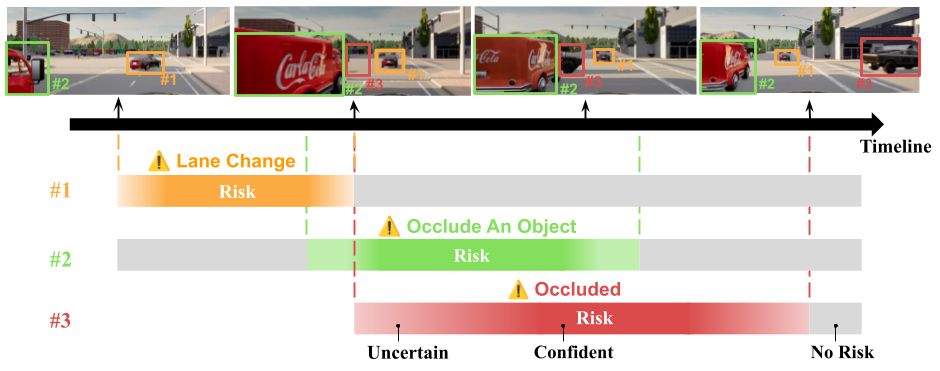
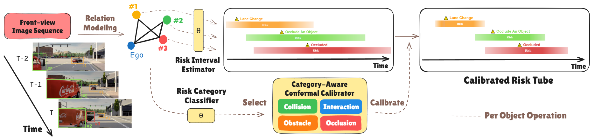
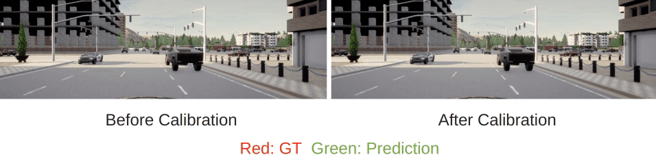
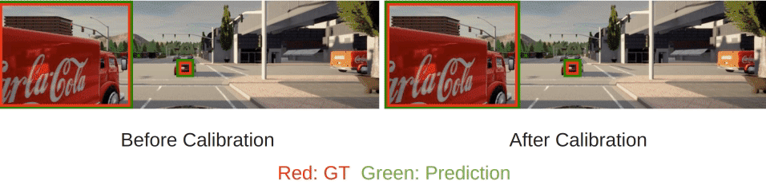
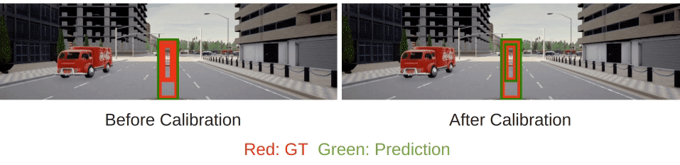
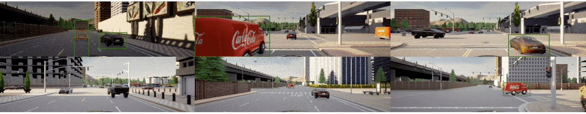
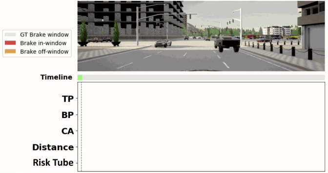
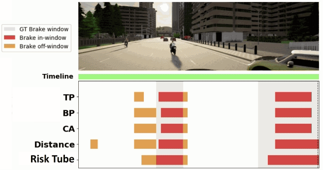
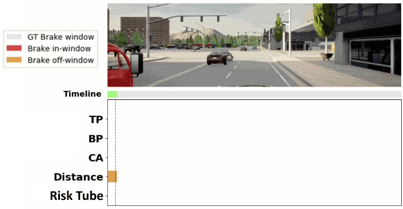
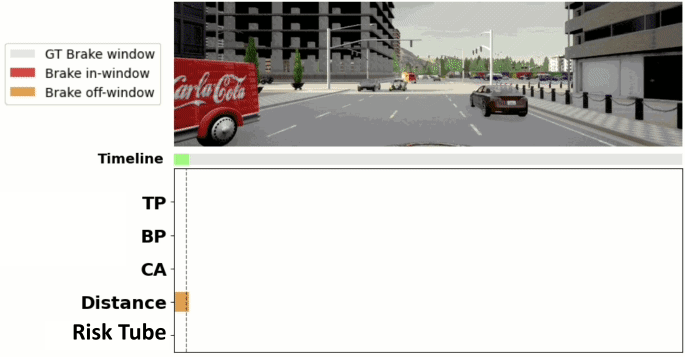

We propose Risk Tube Prediction, a new formulation for Visual Risk Object Identification that jointly models uncertainty of risk variation across space and time. For example, as the green-boxed truck (#2) moves forward, it may create an occlusion during future time. We should therefore be alert to a possible hidden object (#3) at the red-boxed position. At that time, we use a semi-transparent color to depict the model’s evolving uncertainty, turning opaque when the occluded object becomes visible to signal a more confident prediction.
Abstract
We study object importance-based vision risk object identification (Vision-ROI), a key capability for hazard detection in intelligent driving systems. Existing approaches make deterministic decisions and ignore uncertainty, which could lead to safety-critical failures. Specifically, in ambiguous scenarios, fixed decision thresholds may cause premature or delayed risk detection and temporally unstable predictions, especially in complex scenes with multiple interacting risks. Despite these challenges, current methods lack a principled framework to model risk uncertainty jointly across space and time. We propose Conformal Risk Tube Prediction, a unified formulation that captures spatiotemporal risk uncertainty, provides coverage guarantees for true risks, and produces calibrated risk scores with uncertainty estimates. To conduct a systematic evaluation, we present a new dataset and metrics probing diverse scenario configurations with multi-risk coupling effects, which are not supported by existing datasets. We systematically analyze factors affecting uncertainty estimation, including scenario variations, per-risk category behavior, and perception error propagation. Our method delivers substantial improvements over prior approaches, enhancing vision-ROI robustness and downstream performance, such as reducing nuisance braking alerts.
Methodology
Overview of Conformal Risk Tube Prediction

Given front-view images, the model performs spatiotemporal relation modeling and predicts each object's future risk interval. Then, based on the object’s risk category, the corresponding conformal calibrator is applied to calibrate its risk scores over the interval. The calibrated Risk Tube uses a more precise temporal bound to fully cover the true risk interval of each hazardous object.
Dataset
Multiple Coexisting Risks Dataset

We construct the Multiple Coexisting Risks dataset, which integrates four risk categories. Within a single scenario, multiple risks with different categories would occur concurrently or in sequence, which ultimately complicates uncertainty estimation and risk assessment. In total, we obtain about 1,000 scenarios, enabling comprehensive validation under multi-risk settings.
Qualitative Results
Visual-ROI Visualization: Effect of Calibration



More Visual-ROI Visualization

Downstream Task: Braking Alerts




Braking Alerts Criteria: distance < 10 m and Visual-ROI flags risky.
Our method, which produces calibrated and temporally aligned risk intervals, effectively reduces nuisance braking alerts while ensuring timely warnings for genuine risks.
BibTeX